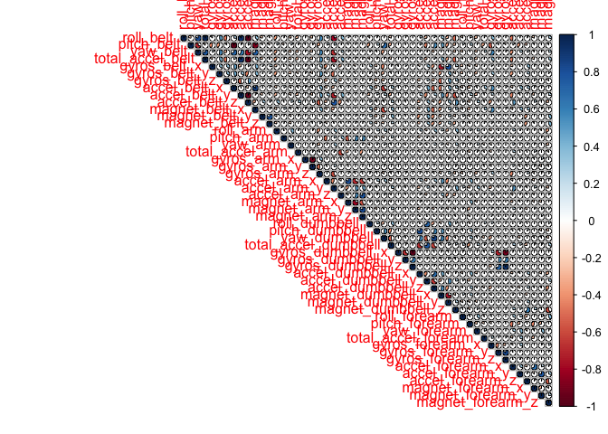

This is final report of Coursera Practical Machine Learning Course. Goal of this document is to build a prediction model of Weight Lifting Exercise. The dataset contains variables from sensor worn by users and the classes that type of exercise. For match this goal, I used ensemble model of Generalized Boosted Regression Model, Random Forest, Conditional Inference Tree. And for reducing dimension to increase training speed, PCA is used. But the ensenble got no more performance of model than Random Forest. After all this approach, I could get 0.98% of accuracy.
library(caret)
library(randomForest)
library(corrplot)
library(gbm)
library(party)
# For increasing learning speed, use multi-core.
library(doMC)
registerDoMC(cores = 8)# Check existance of data directory and create it if not exist.
dataDir <- "data"
if(!dir.exists(dataDir))
dir.create(dataDir)
# Download training and test file
Url.train <- "https://d396qusza40orc.cloudfront.net/predmachlearn/pml-training.csv"
Url.test <- "https://d396qusza40orc.cloudfront.net/predmachlearn/pml-testing.csv"
data.trainPath <- paste0(dataDir, "/", basename(Url.train))
data.testPath <- paste0(dataDir, "/", basename(Url.test))
if(!file.exists(data.trainPath))
download.file(Url.train, data.trainPath, mode = "w")
if(!file.exists(data.testPath))
download.file(Url.test, data.testPath, mode = "w")
data.train <- read.csv(data.trainPath)
data.test <- read.csv(data.testPath)After loaing data, we need to remove the columns what we don’t use. There are columns that have only NA values and nearly zero variance. It’s better that we could replace these columns from data and there’s columns not related to predict weight lifting exercise like observation number or user name or timestamps. It also has to be removed.
# Remove columns having NA values
cs <- colSums(is.na(data.train))
data.train <- data.train[,(cs == 0)]
data.test <- data.test[,(cs == 0)]
# Remove near zero columns
nzvColumns <- nearZeroVar(data.train,saveMetrics=TRUE)
data.train <- data.train[,!nzvColumns$nzv]
data.test <- data.test[,!nzvColumns$nzv]
# Remove unnecessary columns (Username, timesstamps)
data.train <- data.train[,-c(1:6)]
data.test <- data.test[,-c(1:6)]With checking correlation plot, we can get there’s no strong relation between variables to disadventage building model.
corrplot(cor(data.train[,-53]), method="pie", type="upper")
After cleaning data, I found the test data set has only 20 observasions. It’s too small to check the accuracy of model. Hence, I decided to split training data with training and validation. The validation data is for test model’s accuracy and I’ll use training data for building model with K-fold cross validation.
# split data for training/validation
inTrain <- createDataPartition(y=data.train$classe, p=0.7, list=FALSE)
data.trainPart <- data.train[inTrain,]
data.validPart <- data.train[-inTrain,]I made plan to use ensemble model with stacking gbm, rf, ctree And PCA can reduce the size of variables for training performance.
# 53th column is "classe" what will used for outcome label.
pcaModel <- preProcess(data.trainPart[,-53], method=c("pca", "center", "scale"), thresh = 0.95)
data.trainPca <- predict(pcaModel, data.trainPart[,-53])
data.trainPca <- data.frame(data.trainPca, classe = data.trainPart[,53])
data.validPca <- predict(pcaModel, data.validPart[,-53])
data.validPca <- data.frame(data.validPca, classe = data.validPart[,53])
print(pcaModel)## Created from 13737 samples and 52 variables
##
## Pre-processing:
## - centered (52)
## - ignored (0)
## - principal component signal extraction (52)
## - scaled (52)
##
## PCA needed 25 components to capture 95 percent of the varianceAs you see above 25 components has captured with 95 percent of the variance.
set.seed(1234)
fit_gbm <- train(classe ~ ., data = data.trainPca, method = "gbm")## Iter TrainDeviance ValidDeviance StepSize Improve
## 1 1.6094 nan 0.1000 0.1145
## 2 1.5359 nan 0.1000 0.0828
## 3 1.4825 nan 0.1000 0.0804
## 4 1.4316 nan 0.1000 0.0641
## 5 1.3918 nan 0.1000 0.0553
## 6 1.3562 nan 0.1000 0.0509
## 7 1.3240 nan 0.1000 0.0391
## 8 1.2988 nan 0.1000 0.0361
## 9 1.2740 nan 0.1000 0.0329
## 10 1.2515 nan 0.1000 0.0272
## 20 1.0995 nan 0.1000 0.0189
## 40 0.9218 nan 0.1000 0.0070
## 60 0.8127 nan 0.1000 0.0064
## 80 0.7305 nan 0.1000 0.0044
## 100 0.6675 nan 0.1000 0.0031
## 120 0.6153 nan 0.1000 0.0033
## 140 0.5711 nan 0.1000 0.0016
## 150 0.5516 nan 0.1000 0.0019pred_gbm <- predict(fit_gbm, newdata = data.validPca)
confusionMatrix(pred_gbm,data.validPca$classe)## Confusion Matrix and Statistics
##
## Reference
## Prediction A B C D E
## A 1528 134 54 27 24
## B 34 857 77 20 79
## C 29 88 853 129 72
## D 74 16 23 758 47
## E 9 44 19 30 860
##
## Overall Statistics
##
## Accuracy : 0.8251
## 95% CI : (0.8152, 0.8348)
## No Information Rate : 0.2845
## P-Value [Acc > NIR] : < 2.2e-16
##
## Kappa : 0.7784
## Mcnemar's Test P-Value : < 2.2e-16
##
## Statistics by Class:
##
## Class: A Class: B Class: C Class: D Class: E
## Sensitivity 0.9128 0.7524 0.8314 0.7863 0.7948
## Specificity 0.9432 0.9558 0.9346 0.9675 0.9788
## Pos Pred Value 0.8647 0.8032 0.7284 0.8257 0.8940
## Neg Pred Value 0.9645 0.9415 0.9633 0.9585 0.9549
## Prevalence 0.2845 0.1935 0.1743 0.1638 0.1839
## Detection Rate 0.2596 0.1456 0.1449 0.1288 0.1461
## Detection Prevalence 0.3003 0.1813 0.1990 0.1560 0.1635
## Balanced Accuracy 0.9280 0.8541 0.8830 0.8769 0.8868set.seed(1234)
fit_rf <- train(classe ~ ., data = data.trainPca, method = "rf")
pred_rf <- predict(fit_rf, newdata = data.validPca)
confusionMatrix(pred_rf,data.validPca$classe)## Confusion Matrix and Statistics
##
## Reference
## Prediction A B C D E
## A 1667 24 1 2 0
## B 1 1103 6 2 6
## C 2 7 1015 41 9
## D 2 2 3 919 5
## E 2 3 1 0 1062
##
## Overall Statistics
##
## Accuracy : 0.9798
## 95% CI : (0.9759, 0.9832)
## No Information Rate : 0.2845
## P-Value [Acc > NIR] : < 2.2e-16
##
## Kappa : 0.9744
## Mcnemar's Test P-Value : 7.594e-11
##
## Statistics by Class:
##
## Class: A Class: B Class: C Class: D Class: E
## Sensitivity 0.9958 0.9684 0.9893 0.9533 0.9815
## Specificity 0.9936 0.9968 0.9879 0.9976 0.9988
## Pos Pred Value 0.9841 0.9866 0.9451 0.9871 0.9944
## Neg Pred Value 0.9983 0.9924 0.9977 0.9909 0.9958
## Prevalence 0.2845 0.1935 0.1743 0.1638 0.1839
## Detection Rate 0.2833 0.1874 0.1725 0.1562 0.1805
## Detection Prevalence 0.2879 0.1900 0.1825 0.1582 0.1815
## Balanced Accuracy 0.9947 0.9826 0.9886 0.9754 0.9901set.seed(1234)
fit_ctree <- train(classe ~ ., data = data.trainPca, method = "ctree")
pred_ctree <- predict(fit_ctree, newdata = data.validPca)
confusionMatrix(pred_ctree,data.validPca$classe)## Confusion Matrix and Statistics
##
## Reference
## Prediction A B C D E
## A 1449 103 68 58 35
## B 54 828 97 58 74
## C 55 89 749 59 48
## D 77 37 74 721 48
## E 39 82 38 68 877
##
## Overall Statistics
##
## Accuracy : 0.7857
## 95% CI : (0.775, 0.7962)
## No Information Rate : 0.2845
## P-Value [Acc > NIR] : < 2.2e-16
##
## Kappa : 0.7287
## Mcnemar's Test P-Value : 0.0005321
##
## Statistics by Class:
##
## Class: A Class: B Class: C Class: D Class: E
## Sensitivity 0.8656 0.7270 0.7300 0.7479 0.8105
## Specificity 0.9373 0.9404 0.9483 0.9520 0.9527
## Pos Pred Value 0.8459 0.7453 0.7490 0.7534 0.7944
## Neg Pred Value 0.9461 0.9349 0.9433 0.9507 0.9571
## Prevalence 0.2845 0.1935 0.1743 0.1638 0.1839
## Detection Rate 0.2462 0.1407 0.1273 0.1225 0.1490
## Detection Prevalence 0.2911 0.1888 0.1699 0.1626 0.1876
## Balanced Accuracy 0.9014 0.8337 0.8392 0.8500 0.8816predDF <- data.frame(pred_gbm, pred_rf, pred_ctree, classe = data.validPca$classe)
fit_stacked <- train(classe ~ ., data = predDF, method="rf")
pred_stacked <- predict(fit_stacked, newdata = predDF)
confusionMatrix(pred_stacked,data.validPca$classe)## Confusion Matrix and Statistics
##
## Reference
## Prediction A B C D E
## A 1667 24 1 2 0
## B 1 1103 6 2 6
## C 2 7 1015 41 9
## D 2 2 3 919 5
## E 2 3 1 0 1062
##
## Overall Statistics
##
## Accuracy : 0.9798
## 95% CI : (0.9759, 0.9832)
## No Information Rate : 0.2845
## P-Value [Acc > NIR] : < 2.2e-16
##
## Kappa : 0.9744
## Mcnemar's Test P-Value : 7.594e-11
##
## Statistics by Class:
##
## Class: A Class: B Class: C Class: D Class: E
## Sensitivity 0.9958 0.9684 0.9893 0.9533 0.9815
## Specificity 0.9936 0.9968 0.9879 0.9976 0.9988
## Pos Pred Value 0.9841 0.9866 0.9451 0.9871 0.9944
## Neg Pred Value 0.9983 0.9924 0.9977 0.9909 0.9958
## Prevalence 0.2845 0.1935 0.1743 0.1638 0.1839
## Detection Rate 0.2833 0.1874 0.1725 0.1562 0.1805
## Detection Prevalence 0.2879 0.1900 0.1825 0.1582 0.1815
## Balanced Accuracy 0.9947 0.9826 0.9886 0.9754 0.9901The model what has best performance is Random forest as you see. And the ensemble model of gbm, rf, ctree gets no benefit of accuracy.
We need answer to predict the 20 test set with this model. Here is the results.
# Apply PCA
data.testPCA <- predict(pcaModel, data.test[,-53])
# Create predicted variales
pred_gbm_test <- predict(fit_gbm, newdata = data.testPCA)
pred_rf_test <- predict(fit_rf, newdata = data.testPCA)
pred_ctree_test <- predict(fit_ctree, newdata = data.testPCA)
predDF_test <- data.frame(pred_gbm = pred_gbm_test, pred_rf = pred_rf_test, pred_ctree = pred_ctree_test)
pred_stacked_test <- predict(fit_stacked, newdata = predDF_test)
print(t(data.frame(pred_stacked_test)))## [,1] [,2] [,3] [,4] [,5] [,6] [,7] [,8] [,9] [,10] [,11]
## pred_stacked_test "B" "A" "B" "A" "A" "E" "D" "B" "A" "A" "B"
## [,12] [,13] [,14] [,15] [,16] [,17] [,18] [,19] [,20]
## pred_stacked_test "C" "B" "A" "E" "E" "A" "B" "B" "B"